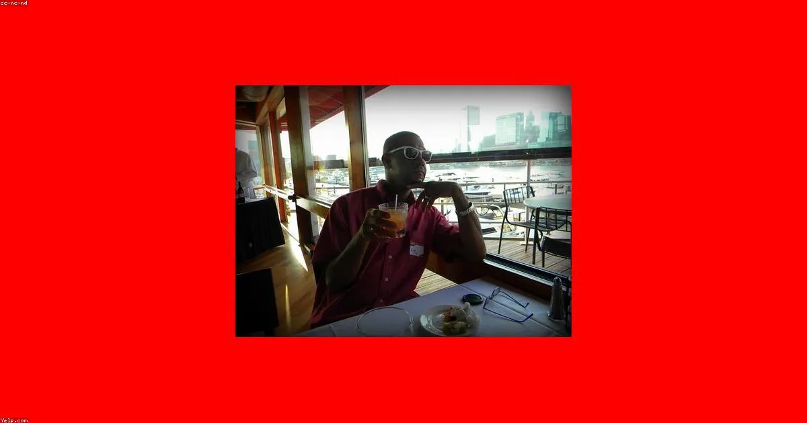

Si tienes un bote o yate en Cartagena y estás pensando en renovar la cubierta, el foam deck probablemente sea el término que más escuchas en el muelle. Y con razón: en los últimos cinco años se ha convertido en la alternativa preferida a la teca natural para embarcaciones en el Caribe colombiano.
Esta guía responde todas las preguntas que recibimos a diario: ¿qué es exactamente el foam deck?, ¿es lo mismo que la cubierta sintética de PVC?, ¿cuánto dura bajo el sol de Cartagena?, ¿cómo se instala? y ¿cuánto cuesta? Todo basado en nuestra experiencia instalando cubiertas en lanchas, veleros, catamaranes y yates de motor en el Caribe colombiano.
¿Qué es el Foam Deck? Definición y Materiales
El foam deck (literalmente "cubierta de espuma") es un revestimiento de espuma EVA (etileno-vinilo-acetato) de grado marino que se adhiere directamente sobre la cubierta de la embarcación. El EVA es el mismo material base de las suelas de zapatillas deportivas premium, pero formulado para resistir agua salada, rayos UV, gasolina y los químicos de limpieza marina.
A diferencia de la cubierta sintética de PVC (que imita la apariencia de la teca con tablillas y calafateo negro), el foam deck puede tener texturas que imitan la teca, el carbono, patrones geométricos o diseños personalizados. Es más suave al tacto que el PVC, más acolchado bajo los pies y, en general, más fresco en superficies expuestas al sol directo.
Foam deck vs cubierta sintética PVC: Aunque los términos se usan indistintamente en Colombia, técnicamente son materiales diferentes. El foam deck es EVA (más suave, más ligero, más acolchado). La cubierta sintética PVC es más rígida y duradera. Instalamos ambos tipos según la necesidad de cada embarcación.
Por Qué el Foam Deck es Ideal para el Caribe Colombiano
El clima de Cartagena impone condiciones extremas a cualquier cubierta: radiación UV de alta intensidad durante todo el año, temperaturas de cubierta que superan los 60°C en verano, humedad constante, agua salada y lluvia torrencial. Estos factores destruyen rápidamente materiales no preparados para el trópico.
El foam deck EVA marino está formulado específicamente para estas condiciones. Sus tres ventajas críticas en el Caribe son:
- Aislamiento térmico: El foam deck no conduce calor como el GRP (fibra de vidrio) ni el aluminio. Bajo el sol de agosto en Cartagena, una cubierta de fibra puede quemar los pies descalzos; el foam deck permanece tolerable al tacto.
- Antideslizante en mojado: La textura del EVA mantiene agarre incluso con aguacero tropical. En mares picados del Caribe, esto puede ser la diferencia entre seguridad y un accidente.
- Resistencia UV certificada: Los materiales que usamos tienen inhibidores UV integrados que evitan la decoloración y fragilización del material bajo la radiación solar caribeña.
Tipos de Foam Deck que Instalamos en Cartagena
1. Foam Deck EVA Liso o con Textura de Madera
El foam deck estándar viene en planchas o rollos de EVA de 6mm a 8mm de grosor. Puede ser completamente liso (para plataformas de natación o embarcaciones deportivas) o con ranuras que imitan la apariencia de la teca. Es la opción más popular para lanchas, yates medianos y embarcaciones de charter.
Colores disponibles: gris carbón, azul marino, beige teca, blanco, negro. También hacemos cortes a medida con patrones personalizados y logos.
2. Cubierta Sintética PVC (Synthetic Teak)
Para quienes buscan la apariencia más cercana a la teca natural, la cubierta PVC premium con juntas negras (mastico simulado) es la mejor opción. Es más rígida que el EVA, más pesada, y generalmente más duradera (15-20 años vs 10-15 del EVA básico). Ideal para yates de representación donde la estética importa tanto como la funcionalidad.
3. Paneles Modulares Foam Deck
Para plataformas de popa, alas del puente de mando, zona de proa o superficies específicas, los paneles modulares de foam deck se instalan con adhesivo marino o sistemas de clips. Son removibles, lo que facilita el acceso a compartimentos de almacenamiento y el mantenimiento de la fibra subyacente.
Proceso de Instalación del Foam Deck
La instalación correcta del foam deck determina su durabilidad. Un foam deck mal instalado se despega, acumula humedad debajo y se deteriora en meses. Así es como lo hacemos:
- Paso 1 – Inspección y medición: Evaluamos el estado de la cubierta, identificamos irregularidades y tomamos medidas exactas con plantillas. Los accesorios (escotillas, winches, bornes) se trazan con precisión.
- Paso 2 – Preparación de la superficie: Lijamos suavemente la cubierta existente, limpiamos con desengrasante y aplicamos primer para máxima adhesión. Una superficie mal preparada es la causa número uno de desprendimiento.
- Paso 3 – Corte a medida: Las piezas se cortan con precisión milimétrica. Los patrones complejos (curvas, esquinas, recortes para winches) se trazan y cortan con herramientas de precisión.
- Paso 4 – Instalación con adhesivo marino: Usamos adhesivo de doble componente específico para EVA/PVC marino. La presión uniforme es clave: cada sección se fija con rodillo y peso hasta el curado completo.
- Paso 5 – Sellado de bordes y juntas: Los bordes y uniones se sellan con Sikaflex marino para impedir infiltración de agua. Este paso es crítico en el ambiente húmedo del Caribe.
Mantenimiento del Foam Deck
La gran ventaja del foam deck frente a la teca natural es su mantenimiento casi nulo. Sin embargo, hay algunas prácticas que maximizan su vida útil:
- Lavado regular: Enjuague con agua dulce después de cada salida. El agua salada acumula sal cristalizada en los poros del EVA que, a largo plazo, puede manchar.
- Limpieza mensual: Jabón neutro y cepillo suave para remover suciedad incrustada. Evitar productos con solventes (acetona, thinner) que degradan el adhesivo y el EVA.
- Inspección de bordes: Revisar anualmente los bordes y sellos. Un borde que empieza a despegarse se soluciona fácilmente con adhesivo adicional; ignorarlo lleva a una reparación mayor.
- Evitar objetos cortantes: El EVA se corta con facilidad. En maniobras con cadenas, anclas o equipos pesados, proteger la cubierta.
¿Cuánto Dura el Foam Deck en Cartagena?
Esto depende directamente de la calidad del material y la correcta instalación. En el clima tropical de Cartagena:
- Foam deck EVA de baja densidad (importaciones económicas): 3-5 años antes de decolorarse y perder adherencia. No recomendado.
- Foam deck EVA marino de calidad media: 8-12 años con mantenimiento correcto.
- Foam deck EVA premium con protección UV avanzada: 15+ años. El material que instalamos nosotros.
- Cubierta sintética PVC premium: 15-20 años. Mayor inversión inicial, mayor durabilidad.
Advertencia sobre materiales económicos: En el mercado colombiano circulan foam decks importados de baja calidad que se venden por precio. Sin protección UV adecuada, se decoloran y agrietan en 2-3 temporadas en el Caribe. Siempre pide especificación técnica del material antes de aceptar una cotización muy económica.
Foam Deck vs Teca Natural: Resumen Rápido
| Criterio | Foam Deck EVA | Teca Natural |
|---|---|---|
| Costo de instalación | Menor (30-50% menos) | Alto |
| Mantenimiento | Solo agua y jabón | Aceitado + calafateo regular |
| Frescura bajo el sol | Excelente (aislante) | Muy buena (natural) |
| Antideslizante | Siempre, incluso mojado | Buena solo con aceite |
| Durabilidad | 10-15 años (EVA premium) | 20-40 años |
| Valor de reventa | Estándar | Premium |
| Personalización | Colores, patrones, logos | Limitada |
Preguntas Frecuentes sobre Foam Deck
¿Se puede instalar foam deck sobre la teca vieja?
En algunos casos sí, pero no lo recomendamos. La teca con mastico agrietado crea una superficie irregular que compromete la adhesión del foam deck. Lo ideal es retirar la teca, nivelar la superficie y luego instalar el foam deck con adhesivo marino directamente sobre el GRP.
¿El foam deck aguanta los rayos UV de Cartagena?
Los materiales de calidad marina tienen inhibidores UV integrados específicamente para climas tropicales. Hemos instalado foam deck que lleva más de 8 años en embarcaciones fondeadas todo el año en Cartagena sin decoloración significativa. La clave es usar material certificado, no importaciones genéricas sin especificación técnica.
¿Puedo poner foam deck en la plataforma de natación?
Es el lugar donde más se instala. La plataforma de popa está en contacto permanente con el agua, sometida a golpes de oleaje y pisadas constantes. El foam deck EVA antideslizante es ideal allí: cómodo, seguro y que no se calienta bajo el sol como la fibra de vidrio desnuda.
¿El foam deck se puede reparar si se daña?
Sí. Una sección dañada se puede reemplazar parcialmente sin cambiar toda la cubierta. Esto es una ventaja sobre la teca natural, donde una reparación parcial siempre se nota. Con foam deck, la reparación bien hecha es prácticamente imperceptible.
¿Listo para Instalar Foam Deck en tu Embarcación?
Evaluamos tu embarcación, te recomendamos el material correcto y te damos cotización en el día. Sin compromiso.